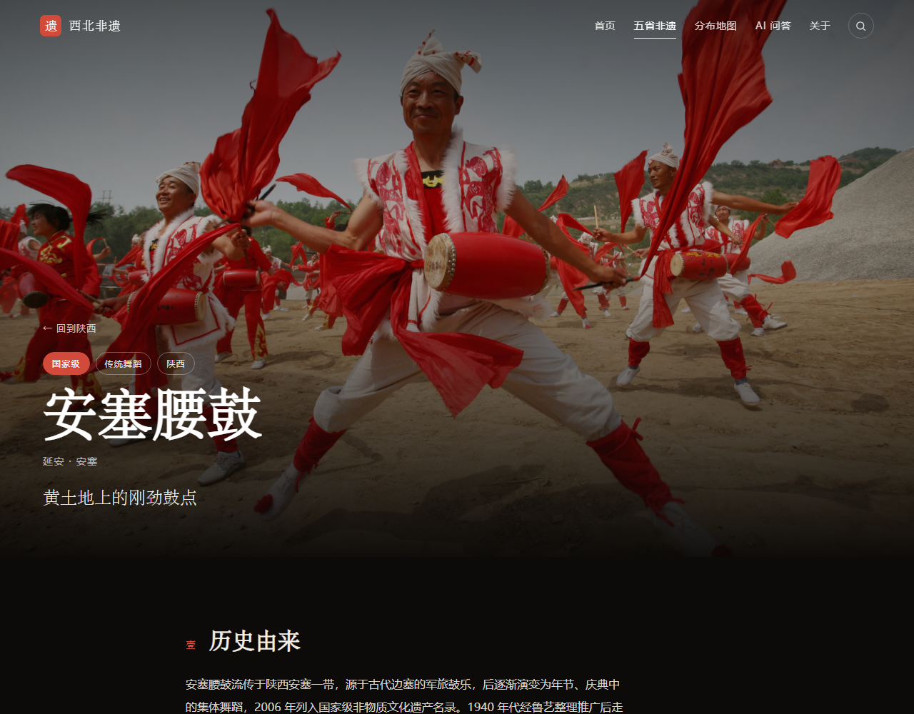
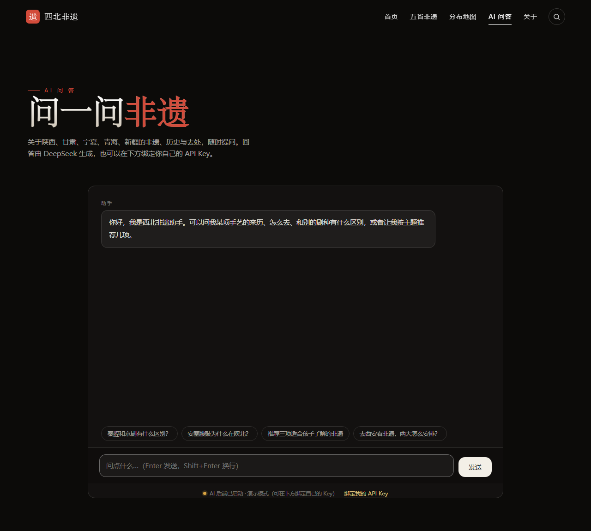

西北五省（区）——陕西、甘肃、宁夏、青海、新疆——拥有逾 300 项国家级非物质文化遗产代表性项目、逾 3000 项省级项目。这些项目的名字大多能在政府公告里查到，但普通人对它们的认知往往停留在「听说过」：
本项目把上述四件事合并成一件：做一个「可筛选、可阅读、可观看、可提问」的非遗影像志。
定位是代表性项目精选导览，而非全量名录。这个选择是主动的，理由在 2.4 节详述。项目目标可拆解为四条：
| 目标 | 可验证的达成标准 |
|---|---|
| 内容密度 | 每项非遗配四节结构化正文（历史由来 / 技艺特点 / 传承现状 / 冷知识），平均不低于 500 字 |
| 视觉可信 | 每项至少一张实拍照片，每个省份至少一段现场影像，杜绝「有文字无图」 |
| 检索效率 | 从任意入口（首页 / 筛选 / 地图 / 搜索）到目标条目，最多两次点击 |
| 可用性兜底 | AI 后端、地图瓦片、本地视频任一失效时，页面仍完整可读，不出现空白或报错 |
| 收录项目 | 67 项 |
| 覆盖省（区） | 5 个（陕西、甘肃、宁夏、青海、新疆） |
| 覆盖城市 | 37 座（其中 34 座有收录项目，地图仅对后者打点） |
| 门类覆盖 | 10 类全覆盖（民间文学、传统音乐、传统舞蹈、传统戏剧、曲艺、传统体育游艺与杂技、传统美术、传统技艺、传统医药、民俗） |
| 正文字数 | 37,667 字，平均 562 字/项 |
| 图片素材 | 67 张（与条目一一对应） |
| 影像素材 | 10 段，合计约 432 MB |
| 交付物 | 位置 / 说明 |
|---|---|
| 代码仓库 | GitHub / Gitee 公开仓库，保留完整提交历史 |
| 可运行站点 | 根目录，`node server.js` 或双击 `启动.cmd` 即可运行 |
| 技术文档 | 本文件（PDF，≤30 页） |
| 演示视频 | 5–8 分钟，1080p 以上，普通话讲解（分镜与讲解词见 `提交材料/演示视频脚本.md`） |
| 内容文档 | `docs/` 下 9 篇 Markdown，含 67 项完整档案（约 138 KB） |
| 用户 | 典型场景 | 核心诉求 |
|---|---|---|
| 学生 / 教师 | 写作业、备课、做地方文化课题 | 快速找到某个项目的来历与特点，文字可直接引用 |
| 旅行者 | 规划西北行程，想「到当地看真的」 | 按城市看有什么，最好有影像先睹为快 |
| 文化爱好者 | 周末闲逛式浏览 | 视觉冲击 + 冷知识，愿意多翻几页 |
| 家长 | 给孩子做传统文化启蒙 | 直观、好懂的篇目，能一起看视频 |
| 研究者 / 媒体 | 快速摸清某地非遗家底 | 按省份、门类的分布与数量统计 |
| 编号 | 功能 | 说明 | 优先级 |
|---|---|---|---|
| F1 | 首页主视觉 | 五省（区）主视觉自动轮播，展示省份统计，提供进入入口 | P0 |
| F2 | 多维筛选 | 按省份 / 城市 / 门类 / 关键词组合筛选，支持四种排序 | P0 |
| F3 | 条目详情 | 四节正文 + 配图 + 上下篇导航 + 同类推荐 | P0 |
| F4 | 分布地图 | 内嵌地图，按省配色打点，点击进入该城市列表 | P0 |
| F5 | 影像播放 | 弹层播放本地影像，缺失时回退线上播放器 | P1 |
| F6 | AI 问答 | 流式对话，知识范围限定站内项目，支持多轮 | P1 |
| F7 | Key 绑定 | 访客可绑定自己的 API Key，前端校验并本地存储 | P1 |
| F8 | 全局搜索 | 顶部搜索浮层，回车直达结果 | P2 |
| F9 | 关于页 | 非遗定义、十大门类、收录范围与数据边界 | P2 |
| 维度 | 要求 | 实现要点 |
|---|---|---|
| 性能 | 首屏 3 秒内可见，图片不阻塞首屏 | 主视觉预加载、其余图片懒加载、图片压缩至最长边 1600px |
| 可用性 | 任一外部依赖失效不导致页面空白 | AI 三级降级、地图双路回退、视频本地/线上双源 |
| 兼容性 | 主流桌面与移动浏览器 | 不依赖新语法；三档响应式断点（1000/640/520px） |
| 无障碍 | 键盘可达，动效可关 | 跳转正文链接、`:focus-visible` 焦点环、`prefers-reduced-motion` |
| 安全 | 仓库无明文密钥 | Key 走环境变量或运行时输入，`.env` 已 gitignore |
| 合规 | 地图数据源合规 | 仅用高德瓦片，坐标 GCJ-02 不二次转换，前端零 Key |
这是本项目最重要的一个取舍，需要单独说明。
官方名录中西北五省国家级项目逾 300 项、省级逾 3000 项。若追求「全量」，有三种做法，代价都很明确：
| 做法 | 问题 |
|---|---|
| 只列名称的清单 | 页面变成 300 行链接，点进去只有一行字。用户得不到任何有效信息，视觉与体验全面崩塌 |
| 为 300 项各写四节正文 | 单人或小组在赛期内无法完成可靠考据；为了填字数必然产生杜撰，反而违背非遗保护的基本态度 |
| 照搬百科内容 | 版权风险 + 同质化，且与「影像志」的定位无关 |
因此项目采取第三种策略：做深不做全，并把边界写在页面上。关于页用一张表明确列出「各省官方项目总数 vs 本站收录数」，并注明数字来源与查询渠道。对一个文化类作品而言，「知道自己收录到哪里」比「假装收录全部」更负责任，也更经得起评委追问。
系统采用「纯前端单页应用 + 轻量 Node 后端」的两段式结构，零构建、零第三方运行时依赖。前端负责全部渲染与交互，后端只做两件事：托管静态资源、代理 AI 请求。
┌──────────────────────────────────────────────────────────┐
│ 浏览器 │
│ index.html ── style.css ── app.js（哈希路由 + 渲染） │
│ │ │ │ │
│ │ │ ├─ data.js 数据层 │
│ │ │ ├─ config.js 运行期配置 │
│ │ │ ├─ videos.js 影像清单 │
│ │ │ └─ manifest.js 图片映射 │
│ │ │ │
│ │ └─ MapLibre GL JS（本地化）+ 高德栅格瓦片 │
└───────┼───────────────────────────────────────────────────┘
│ fetch /api/chat（SSE 流式）
│ fetch /api/verify · /api/health
▼
┌──────────────────────────────────────────────────────────┐
│ server.js（Node 内置模块，零依赖，127.0.0.1:4190） │
│ ├─ 静态托管（支持 HTTP Range，视频可拖动） │
│ ├─ /api/chat 代理 DeepSeek，SSE 透传 │
│ ├─ /api/verify 校验访客自带 Key（不产生 token 消耗） │
│ └─ /api/health 健康检查 │
└──────────────────────────────────────────────────────────┘
│ curl 子进程
▼
api.deepseek.com
使用哈希路由，共 6 个视图。选择哈希而非 History API 的原因是：静态托管即可工作，刷新不会 404，可直接部署到任意静态空间。
| 路由 | 视图 |
|---|---|
#/ | 首页（轮播 + 五省 + 精选 + 影像 + AI 入口 + 门类） |
#/discover | 发现页，支持 ?province= ?city= ?category= ?kw= |
#/item/:id | 条目详情页 |
#/map | 分布地图 |
#/ask | AI 问答，支持 ?q= 自动提问 |
#/about | 关于与收录范围 |
全部采用「字符串模板 → app.innerHTML」的整体替换式渲染，不引入虚拟 DOM。理由是页面规模小（单页最多 67 张卡片）、交互以路由切换为主，整体替换的开销远低于维护 diff 算法的复杂度。所有用户数据与文案经 esc() 转义后插入，避免 XSS。
只有三处状态：chatThread（对话历史，内存）、localStorage（访客 Key）、URL 查询参数（筛选条件）。筛选状态放在 URL 里，好处是可分享、可前进后退、刷新不丢。
数据以 JS 常量的形式内联在 data.js，而非 JSON 文件或接口请求。原因：数据量在百条级别，内联可省一次网络往返，且避免 file:// 下的跨域限制，使「双击 HTML 也能看」成立。
| 常量 | 说明 |
|---|---|
PROVINCES | 5 个省（区），含配色、描述、下辖城市 |
CITIES | 由 PROVINCES 扁平化派生，附 provinceId |
ITEMS | 67 项非遗，含 id / name / cityId / provinceId / level / category / summary / history / feature / inheritor / fact |
CATEGORIES / LEVELS | 十大门类、五级保护体系 |
GEO | 37 个城市坐标，[纬度, 经度]，GCJ-02 |
ITEMS[].cityId 必须存在于 CITIES。开发期用脚本做过一次全量校验，确保无悬空引用；否则地图打点会静默丢失。后端仅 200 余行，使用 Node 内置模块，无任何 npm 包。三个接口 + 静态托管：
| 接口 | 方法 | 说明 |
|---|---|---|
/api/chat | POST | 接收 messages，以 SSE 流式转发 DeepSeek 增量结果 |
/api/verify | POST | 校验访客 Key：请求 /models 验权限，不产生 token 消耗 |
/api/health | GET | 返回 {ok, key, demo, model, port}，前端据此显示状态 |
| 其余路径 | GET | 静态文件托管，支持 HTTP Range，视频可拖动进度条 |
开发期实测：Node 的 https.request 直连 api.deepseek.com 在国内部分网络环境下会抛 socket hang up，而系统 curl 能正常连通（curl 会读取系统代理配置）。因此改为 spawn 一个 curl 子进程转发，把 stdin 作为请求体、stdout 作为响应流直接透传给客户端。
这个方案牺牲了一点优雅，换来的是在有系统代理的环境里开箱可用，同时保持零依赖。同时修过两个坑：一是必须为 curl 的 stdin 写入完整 body 再 end，否则服务端会因缺少 Content-Length 拒绝；二是不能监听 req.on('close')（请求体读完就会触发），要改监听 res.on('close') 并判断 writableEnded，否则会误杀上游。
地图是本项目技术含量较高、也最容易踩合规红线的一块。
| 渲染器 | MapLibre GL JS 4.7.1（BSD 许可，本地化引入，不依赖 CDN） |
| 底图 | 高德栅格瓦片 webrd0{1-4}.is.autonavi.com，免 Key |
| 坐标系 | GCJ-02；数据层已按此录入，直接上图，不做二次转换 |
| 暗色处理 | 高德仅提供亮色瓦片，用 canvas 滤镜 invert(1) hue-rotate(180deg) 转暗；DOM 标记不经过滤镜，故用亮色 |
| 兜底链路 | 瓦片 → 高德官方 JS API（需 Key）→ 腾讯地图 → 页面内提示卡片，逐级回退 |
取景上还修过一个隐蔽缺陷：fitBounds 的过渡动画会被紧接着触发的 ResizeObserver → map.resize() 打断，导致视野停在偏窄的位置（新增新疆后表现得尤其明显——新疆整块被推到画布外）。修复方式是初始取景不做动画，布局稳定后再补校一次，并记录容器宽度、仅在宽度变化且用户未手动操作时重新取景。
本章按大赛要求，重点说明 AI 技术的选型理由、集成方式与优化策略。
项目的 AI 用途非常明确：基于站内 67 项非遗资料做问答。它不需要写代码、不需要长文档分析，只需要「懂中文、听话、便宜、快」。据此对比了几条路线：
| 方案 | 结论 | 理由 |
|---|---|---|
| DeepSeek（选定） | 采用 | 中文表达自然；OpenAI 兼容协议接入成本低；按 token 计费便宜，适合高频演示；提供 SSE 流式，首字延迟低 |
| GPT 系列 | 不采用 | 国内网络可达性不稳定，评审现场演示风险高；单价偏高 |
| 国内其他大模型 | 备选 | 能力相当，但接口各异，切换成本存在；DeepSeek 的兼容协议便于后续替换 |
| 本地小模型 | 不采用 | 本机部署需 GPU，评审机器不一定具备；包体膨胀，与「零依赖、双击即用」的定位冲突 |
| 纯检索（无 LLM） | 不采用 | 只能返回片段，无法回答问题；但保留为离线降级方案，见 4.4 |
关键判断是：不追求模型最强，只追求「演示不出事」。因此选型权重里，网络可达性与成本排在能力之前。
浏览器 ──POST /api/chat（JSON）──▶ server.js ──curl --data-binary @-──▶ api.deepseek.com ▲ │ └────── SSE 增量 chunk ◀─────────────┘（逐块透传，不做缓冲）
后端不做任何解析与改写，curl 的 stdout 原样写给客户端。唯一例外是首个数据块：如果开头不是 data: 而是 JSON 错误体，则包装成一条错误事件下发，让前端能显示具体原因（如 401、402）。
浏览器直连 api.deepseek.com 有两个问题：一是会把 Key 暴露在前端代码与网络面板中；二是跨域与网络环境不可控。走本机后端代理后，Key 只存在于服务端环境变量或内存，符合大赛对密钥管理的要求。
前端用 fetch 拿到 ReadableStream，按 \n\n 切分 SSE 事件，解析 data: 行并累加 choices[0].delta.content，每收到一块就更新气泡文本并保持滚动到底。首字可见时间通常在 1 秒内，明显优于等待整段返回。
通用大模型对地方非遗的了解是「有印象但不精确」，容易张冠李戴。项目用一段系统提示词把范围钉死：
你是「西北非遗」网站的讲解助手，服务于陕西、甘肃、宁夏、青海、新疆五省（区） 非物质文化遗产的科普。只回答与非遗、历史文化、旅行相关的问题；用简体中文， 简洁分点，控制在 220 字以内；不确定的信息要说明「资料不足」；不要编造传承人姓名。 本站收录项目：西安鼓乐（西安·传统音乐）：千年古乐活化石；秦腔（西安·传统戏剧）： 八百里秦川的吼；……（共 67 项，格式为「名称（城市·门类）：一句话概要」）
这段提示词做了四件事：
上下文窗口只携带最近 10 条对话，控制 token 成本，同时保证多轮追问能接上。
AI 是本项目最容易「演示翻车」的环节：后端可能没启动、Key 可能过期、网络可能不通。因此设计了三级降级，任何一级失效都不会把错误抛给用户：
| 级别 | 触发条件 | 表现 |
|---|---|---|
| L1 AI 在线 | 后端启动且配置了 Key | 正常流式回答，状态栏显示「AI 已连接 · 模型名」 |
| L2 演示模式 | 后端启动但无 Key | 返回引导性回答，提示如何配置 Key |
| L3 离线知识库 | 后端不可达（连接失败） | 用站内 67 项数据按「项目名 → 城市 → 省区 → 门类 → 推荐」五级规则本地作答，并明确标注「由站内离线知识库作答」 |
L3 的规则匹配虽然简单，但在演示场景中极其有效：即使完全断网，问「推荐三项适合孩子了解的非遗」也能立刻得到结构化的三条答案，页面永远不会出现红色报错。
不是每个评审都愿意等你在服务器上配 Key。因此做了「访客自带 Key」：页面底部可绑定自己的 DeepSeek Key，优先级高于服务器配置。
| 存储 | 仅本机浏览器 localStorage，不上传服务器 |
| 校验 | POST /api/verify，请求 /models 验证权限，不产生 token 消耗 |
| 传递 | 聊天请求携带 X-DeepSeek-Key 请求头，由本机后端代转发 |
| 错误分级 | 401 → Key 无效或已吊销；402 → 余额不足；429 → 请求过于频繁 |
/models 而非真实对话，避免「点一次校验就花钱」；| 情形 | 处理 |
|---|---|
| 用户问站外内容（如京剧、外国非遗） | 系统提示词限定领域，超出范围时模型会说明「本站未收录」 |
| Key 失效 / 欠费 | 后端把上游错误包装成 SSE 事件，前端显示具体原因并提示重新绑定 |
| 后端未启动 | L3 离线知识库兜底，状态栏显示当前模式 |
| 本地规则也匹配不到 | 展示一张说明卡，附「重试这一次提问」按钮，而非报错文本 |
| 模型输出编造内容 | 提示词层面禁止编造传承人；页面显著位置标注「回答由 AI 生成，仅供参考」 |
首页采用「全屏主视觉 + 玻璃质感文字层 + 右侧缩略图条」的版式，五省（区）主视觉每 6 秒自动切换。
实现要点：
background-image 叠放，通过 .on 类切换透明度，避免图片重新加载造成的闪烁；heroProg 6000ms linear，切换时重置动画（animation:none + 强制重排）以同步计时；prefers-reduced-motion，系统开启减少动效时不做自动轮播；swap 类做轻微的位移淡入，形成「换气」感。发现页支持「省份 × 城市 × 门类 × 关键词」四维组合，以及默认 / 保护级别 / 城市 / 名称四种排序。筛选状态全部写入 URL 查询参数：
#/discover?province=xinjiang&category=传统技艺&kw=绸
这样做的好处是：结果页可分享、浏览器前进后退自然生效、刷新不丢筛选条件。筛选逻辑本身是一次数组 filter 加一次 sort，在 67 条数据上无性能压力，因此不做索引与缓存。
每一项的详情页固定为四节，用「壹 / 贰 / 叁 / 肆」编号，形成阅读节奏：
| 序号 | 标题 | 内容定位 |
|---|---|---|
| 壹 | 历史由来 | 源流、年代、名录批次、传播路径 |
| 贰 | 技艺特点 | 工艺步骤、动作要领、曲牌板式等「怎么做」 |
| 叁 | 传承现状 | 谁在传、在哪里传、面临什么问题 |
| 肆 | 冷知识 | 一条有画面感、能记住的细节 |
页面顶部为大图与标签（级别 / 门类 / 省份），底部为上下篇导航与「同乡·同类」推荐，保证用户能沿着主题继续读下去，而不是读完就跳出。

地图采用「大图 + 右侧城市索引」的两栏布局（2:1）。核心逻辑：
itemCount > 0 过滤，当前 34 个点位；fitBounds 会被静默忽略，因此取景放在 requestAnimationFrame 里等有尺寸再执行。问答页由三部分组成：消息流、预设问题、输入区。输入区下方是一行状态指示（绿点 + 当前模式）与「绑定我的 API Key」入口。
Key 绑定的交互流程：
点击「绑定我的 API Key」 → 展开面板（密码框 + 模型选择） → 点「校验并保存」 → POST /api/verify（只查 /models，不消耗 token） → 成功：写入 localStorage，状态栏变为「AI 已连接 · 你的 Key」，面板提示已保存 → 失败：就地显示原因（无效 / 余额不足 / 限流 / 网络不通），不保存
「先验后存」是刻意的：避免用户存了一个错误 Key，之后每次提问都失败却不知道问题出在哪。

10 段影像全部本地化到 assets/video/，弹层优先播放本地文件。若文件缺失或损坏，监听 <video> 的 error 事件，一次性回退到哔哩哔哩 iframe 播放器（BV 号保存在 videos.js 中）。
此外，server.js 的静态托管实现了 HTTP Range：返回 206 Partial Content 与 Content-Range。没有 Range 支持时，浏览器无法拖动进度条，部分浏览器甚至会直接拒绝播放。
项目没有引入测试框架（与「零依赖」定位一致），采用三层手工与脚本化验证：
| 层级 | 方法 | 覆盖内容 |
|---|---|---|
| 静态检查 | node --check 逐个校验 7 个 JS 文件 | 语法错误、括号不匹配 |
| 数据完整性 | Node 脚本加载 data.js，断言关系 | ID 唯一、cityId 有效、坐标全覆盖、图片/视频映射完整 |
| 端到端 | 无头 Edge 渲染 + DOM 断言 + 截图目视 | 各页面渲染、点位数量、状态栏文案、图片是否真实加载 |
| 编号 | 用例 | 预期 | 结果 |
|---|---|---|---|
| T1 | 67 项数据的 cityId 是否都存在于 CITIES | 无悬空 | 通过 |
| T2 | 37 个城市坐标覆盖率 | 100% | 通过（37/37） |
| T3 | 67 项是否都有配图映射 | 全部命中 | 通过（67/67） |
| T4 | 十大门类是否都有条目 | 全覆盖 | 通过（10/10） |
| T5 | 地图点位数量 | = 有收录的城市数 | 通过（34 = 34） |
| T6 | 零收录城市是否从地图与索引中消失 | 不出现 | 通过（吐鲁番/阿克苏/阿勒泰出现 0 次） |
| T7 | 无 .env 启动后端 | 进入演示模式 | 通过（demo:true） |
| T8 | 无效 Key 校验 | 返回明确原因 | 通过（「Key 无效或已被吊销」） |
| T9 | 格式错误 Key | 前端拦截 | 通过（「应以 sk- 开头」） |
| T10 | 带自定义 Key 头发起对话 | 返回真实内容 | 通过 |
| T11 | 断开后端后提问 | 离线知识库作答 | 通过（返回结构化三条推荐） |
| T12 | 视频 Range 请求 | 206 Partial Content | 通过（bytes 0-1023/17014950） |
| T13 | 移动端 375px 宽度 | 无横向滚动、卡片单列 | 通过 |
| 首屏资源总量 | HTML + CSS + JS + 首张主视觉 ≈ 1.1 MB（不含影像） |
| 图片优化 | 9 张超 800KB 的大图经压缩后由 28.4 MB 降至 14.7 MB（-48%），最长边统一 1600px |
| 图片加载 | 全部 loading="lazy" + decoding="async"，主视觉用 preload 提前加载 |
| 第三方请求 | 仅地图瓦片；字体全部系统字体，无外链 |
| AI 首字延迟 | 流式输出，通常 1 秒内出现首字 |
三种部署形态，按使用场景选择：
| 形态 | 命令 / 操作 | AI 可用性 |
|---|---|---|
| 本地全功能 | node server.js 或双击 启动.cmd | 可用（需 Key 或访客自带） |
| 纯静态托管 | 把站点文件上传到任意静态空间 | 不可用，自动降级为 L3 离线知识库 |
| 云主机常驻 | pm2 start server.js 或 systemd 托管 | 可用，需在 `.env` 配置 Key |
server.js（需开放 4190 端口或反代到 80/443），并不要在服务器 `.env` 中配置自己的 Key——改为在页面提示访客「绑定自己的 API Key」，既符合「API 密钥不得出现在公开仓库」的要求，也避免了公网 Key 被刷的风险。| 问题 | 说明与影响 |
|---|---|
| 无头浏览器下地图偶发不渲染 | 无头环境 WebGL 未初始化时，8~15 秒后触发兜底卡片。真实浏览器不受影响；已把兜底超时从 8 秒放宽到 15 秒以降低误判 |
| 视频体积偏大 | 10 段共约 432 MB，其中秦腔单条 158 MB。未做重编码，避免损失画质；如需控制包体可统一压至 720p |
| 部分配图为公开网络素材 | 含少量水印（如 ic photo）。正式公开发布前应替换为授权素材，页面页脚已声明 |
| 收录非全量 | 设计选择，已在关于页明确标注口径，见 2.4 节 |
问题：依赖大模型的应用最容易在演示环节翻车——后端没启动、Key 过期、网络不通，任何一种都足以让页面出现一段红色报错，直接毁掉第一印象。
做法：把「AI 在线 / 演示模式 / 离线知识库」做成三级降级。第三级不是简单的报错文案，而是一套基于站内 67 项数据的本地检索规则，按「项目名 → 城市 → 省区 → 门类 → 推荐」五级匹配，返回结构化答案，并明确标注来源。
价值：即使完全断网，AI 问答区仍然可用且诚实；演示现场不需要祈祷网络良好。
问题：把 Key 写进服务器，作品一旦公开就意味着自己的额度被别人消耗；不写，评审又看不到 AI 效果。
做法：在前端做 Key 绑定面板。访客填入自己的 Key → 调用 /api/verify（只查模型列表，不产生 token 消耗）→ 校验通过才写入 localStorage → 后续请求通过 X-DeepSeek-Key 头交给本机后端代转发。
价值：公开仓库零密钥、公开部署不烧作者额度、评审仍能完整体验；同时把错误分级做到位（无效 / 欠费 / 限流），用户知道该修什么。
做法一：点位不再按「行政区全量」打点，而是按「是否真的收录了项目」过滤。地图上每一个亮点点进去都有内容，不存在「点了是空的」的挫败感。
做法二：修复 fitBounds 动画被 ResizeObserver → map.resize() 打断导致视野偏窄的问题（表现为新增省份后，最西侧区域被推到画布之外）。修复后五省完整可见，且用户手动缩放后不再被自动重置。
价值：地图从「装饰」变成「可信的导航」。
多数文化类展示项目倾向于暗示自己「收录完整」。本项目反其道而行：关于页用一张表明确写出各省国家级项目的官方总数、本站收录数与覆盖城市数，并注明数字来源与查询渠道。
这不是自曝其短，而是把「精选」变成一个可被验证的承诺——用户可以清楚地知道这里能看到什么、看不到什么，从而信任看到的部分。
所有条目强制采用「历史由来 / 技艺特点 / 传承现状 / 冷知识」四节结构，用「壹贰叁肆」编号。无论读者点开哪一项，都能在同样的位置找到同样的信息。这解决了同类项目常见的问题：有的条目洋洋千言，有的只有一行简介，阅读体验割裂。
其中「冷知识」一节是刻意设计的钩子——每项都给一条有画面感的细节（例如：芯子上的孩子凌晨就被绑上架，一整天不能下地，家长反而觉得是福气），用于提升停留时长与分享意愿。
对安塞腰鼓、华阴老腔、达瓦孜这类高度依赖「看和听」的技艺，纯文字几乎无法传达。项目为其中 10 项配了现场影像，并与文字形成互补：文字说明「为什么这样」，影像展示「到底什么样」。影像全部本地化，缺失时自动回退线上播放器，保证有网没网都能看。
项目完成了既定目标：
| 取舍 | 选择与理由 |
|---|---|
| 做全 vs 做深 | 选择做深。300 项各写四节正文无法保证不出错，宁可 67 项条条可读，并把边界写在页面上 |
| 框架 vs 原生 | 选择原生。单页体量下框架带来的收益小于其构建与学习成本 |
| 模型能力 vs 可达性 | 选择可达性。评审现场网络不可控，稳定可演示比「最强模型」更重要 |
| 视觉冲击 vs 可读性 | 两者兼顾：用大图建立氛围，但正文严格控制在 76ch 行宽、1.9 行高，保证长文可读 |
data.js，非技术人员无法维护。| 方向 | 具体设想 |
|---|---|
| 内容扩充 | 按批次持续补录，每批 10 项，配套核验与配图流程；最终目标覆盖五省国家级项目的 30% 以上 |
| 接入官方数据 | 从中国非物质文化遗产网同步名录字段，把「名称 / 批次 / 类别 / 申报地区」做成结构化数据，减少人工录入误差 |
| 内容管理 | 增加一个轻量后台（或 Markdown 驱动的构建脚本），让非技术人员也能录入 |
| AI 能力增强 | 引入向量检索做 RAG，把 67 项正文切片入库，让回答能引用具体段落而非仅有概要 |
| 多模态 | 探索「上传一张照片，识别是哪类非遗」的视觉检索玩法 |
| 无障碍与多语 | 补充英文版，便于对外传播；完善屏幕阅读器支持 |
| 省（区） | 收录项目 | 覆盖城市 | 覆盖门类 |
|---|---|---|---|
| 陕西省 | 26 项 | 10 座 | 7 类 |
| 甘肃省 | 11 项 | 8 座 | 7 类 |
| 宁夏回族自治区 | 7 项 | 4 座 | 6 类 |
| 青海省 | 9 项 | 4 座 | 6 类 |
| 新疆维吾尔自治区 | 14 项 | 8 座 | 10 类 |
| 合计 | 67 项 | 34 座 | 10 类 |
请求头：
Content-Type: application/json
X-DeepSeek-Key: sk-xxx （可选，访客自带 Key）
X-DeepSeek-Model: deepseek-chat（可选）
请求体：
{ "messages": [ { "role": "system|user|assistant", "content": "..." } ] }
响应：
Content-Type: text/event-stream
data: {"choices":[{"delta":{"content":"…"}}]}
data: [DONE]
请求体：{ "key": "sk-xxx" }
响应： { "ok": true, "message": "Key 有效" }
{ "ok": false, "message": "Key 无效或已被吊销" }
{ "ok": true, "key": true, "demo": false, "model": "deepseek-chat", "port": 4190 }
| 变量 | 必填 | 默认值 | 说明 |
|---|---|---|---|
DEEPSEEK_API_KEY | 否 | 空 | 留空则进入演示模式 |
DEEPSEEK_MODEL | 否 | deepseek-chat | 可选 deepseek-reasoner |
DEEPSEEK_API_BASE | 否 | api.deepseek.com | 一般无需修改 |
PORT | 否 | 4190 | 后端监听端口 |
CURL_BIN | 否 | 系统 curl | 代理转发所用 curl 路径 |
—— 文档完 ——